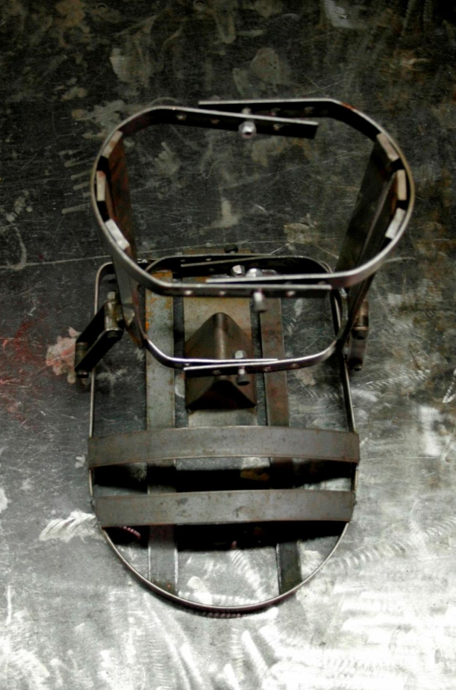
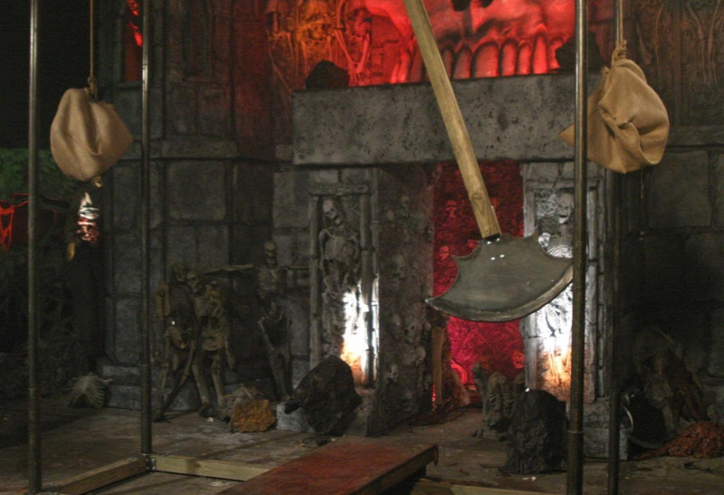
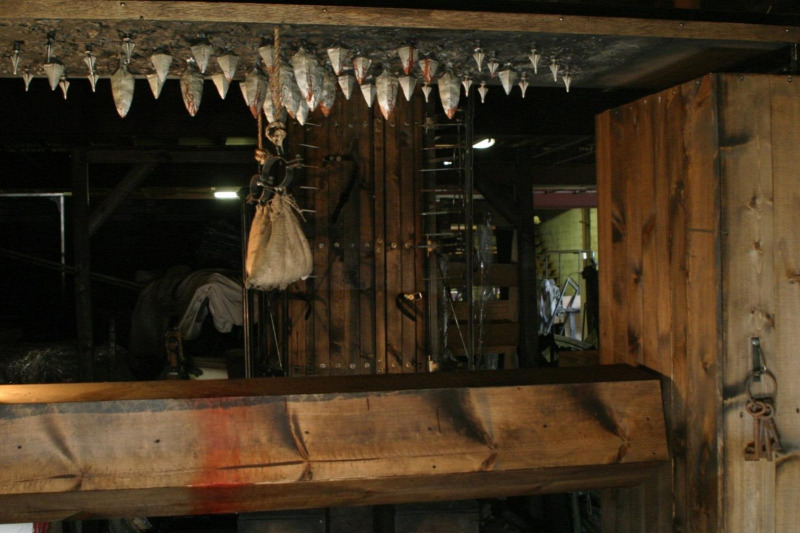
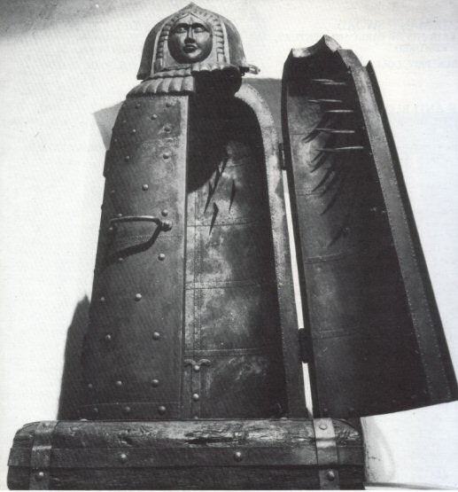
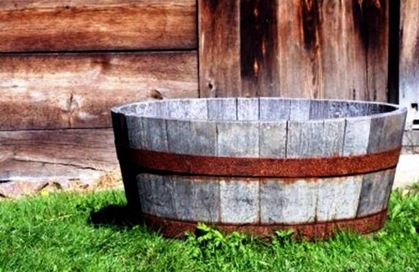
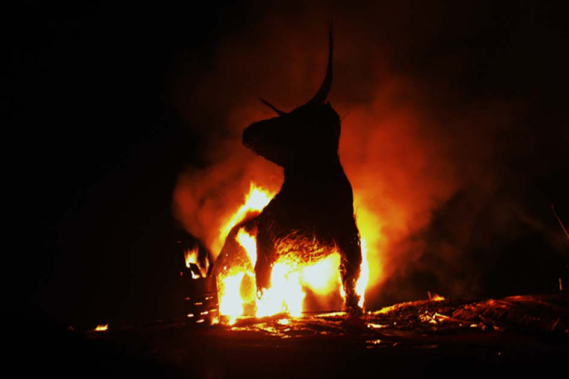
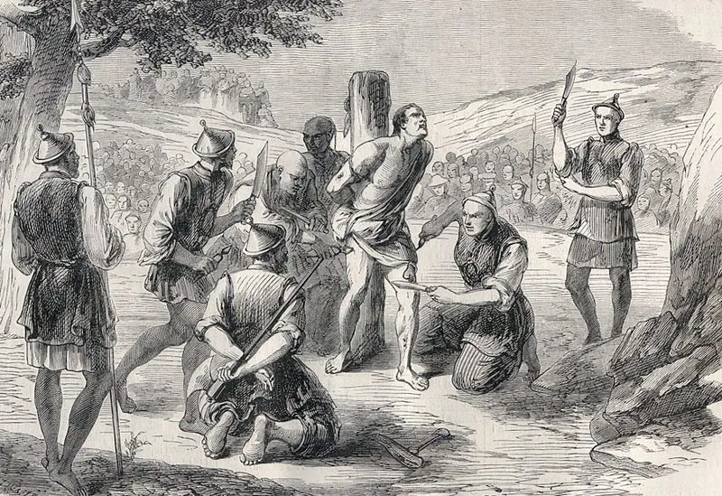

Kínzóeszközök a középkorból

Spanyolcsizma
Az inkvizíció egyik találmánya, a spanyolcsizma elterjedt vallatási módszer volt, mellyel az eretnekekből túlvilági erők létezését bizonyító vallomásokat csikartak ki.
A perbe fogott delikvensek lábát két szorítófa közé tették, majd az inkvizítorok kérdéseket tettek fel, és ha nem tetszett nekik a válasz, akkor szorítottak egyet a csizmán.
A módszert elég sokáig alkalmazták, Magyarországon például 1867-ből származik egy feljegyzés, mely szerint Antonio Caraffa gróf Eperjesen, a kassai bíró, Nagyrákai Feja Dániel lábát szoríttatta fahasábok közé, aki rögtön a második szorításnál beleőrült a fájdalomba.

Inga
A spanyol inkvizítorok kedvelt kivégzőeszköze, az inga számos eretneknek kikiáltott személy halálát okozta.
A meztelenre vetkőztetett áldozatot fekve egy padhoz kötözték, majd beindították a felette ingamozgásban lengő, mereven rögzített, borotvaéles bárdot és lassan elkezdték leereszteni.
A bárd végül lefejezte az áldozatot.

Hazugok padja
A középkori Angliában az egyik legsúlyosabb bűnként tartották számon a hazugságot. A tetten érteket a hazugok padján kínozták meg.
A bűnöst meztelenül egy vízszintes, ötszögletű gerendára ültették, melyet egy állványzat fogott közre. Lovagló pózban, lábán súlyokkal foglalt helyet a kínzott a szerkezeten. Kezeit az állványhoz kötötték, majd elkezdték tekerni alatta a forgatható gerendát. Nem volt minden esetben halálos a gépezet, de akiken végrehajtották ezt az ítéletet, borzalmas állapotban kerültek le a padról.

A vasszűz
Állítólag az inkvizíció kedvelt eszköze volt.
Az áldozatot beleállították egy koporsószerű képződménybe, majd rácsukták a szegekkel kivert ajtót, ami szinte egyből végzett velük.
Sokan kétlik, hogy tényleg létezett, de könnyű elképzelni az áldozatok rettegését ettől a kínzóeszköztől.

Kád
Ebben dézsaszerű kádba ültették a kínzásra ítélt embert.
A kádba annyi vizet öntöttek csak, hogy felsőteste kilátszódjon. A kilátszódó testrészt bekenték vastagon mézzel, illetve tejjel. Ez eddig még nem is lenne borzalom.
Azonban ezeknek az embereknek napokat kellett tölteni ebben a kádban, amelybe beleengedték vizeletüket és ürüléküket. Erre megjelentek a legyek, amelyek beköpték az embereket. Így szépen lassan elevenen falták fel az elítélteket a férgek.

Eretnekek villája
A nyakra szíjazott, villás végű fémrúd a “páciens” álla alatti puha bőrt és a mellet sértette fel.
A hegyes tüskék arra késztették az áldozatot, hogy folyamatosan felfelé nézzen, ami azt eredményezte, hogy pár percen belül izomgörcsök, húzódások kezdték gyötörni, nem beszélve a hegyes fémhegyekről, melyek négy helyen szúrtak a bőre alá.
Végül az áldozatot felszúrta a villa.

Nyakörv tüskékkel
Célja hasonló volt az eretnek villához.
Lényege az volt, hogy a kínzott a nyakán viselte, hogy ne tudjon elaludni. Ez veszélyesebb volt az eretnek villától, mert ha elaludt a kínzott, akár nyaki artériát is átszúrhatott a tüske.
Ez a legtöbb kínzóeszközhöz képest általában gyors halállal járt.
Svéd ital
A víz létfontosságú része életünknek, ám ha túl sokat viszünk be szervezetünkbe, akár végzetes is lehet. A svéd ital alkalmazásakor nemhogy túlitatják a kínzott személyt, de üvegport és üvegszilánkokat is kevernek az éltető nedűbe,melyet egy cső és egy tölcsér segítségével juttattak az áldozat testébe. A lenyelési nehézségeken kívül a sok éles darab rengeteg sérülést okozott a gyomorban, a belekben, illetve eszméletlen fájdalmakkal járó tortúrává tette a vizelet és széklet ürítését. Néha még szennyezett, sáros víz is került a delikvensek torkába. Ezeket hallva természetesen nem mindenki nyitja fel oly könnyen a száját, hogy aztán agyonitassák a szilánkos vízzel, így sokaknak kiverték a fogát, s úgy juttatták szájába a levet. Ezt a módszert egyes feljegyzések szerint még a harmincéves háború alatt is bevetették, és a második világháborúban is alkalmazták.

Bronzbika
Egy újabb igazán kreatív és jól megtervezett kínzóeszköz a bronzbika. A bika alakú üreges szobrot bronzból öntötték ki úgy, hogy a belsejében egy ember is elférjen.
A fémszörnyetegbe zárták a kivégezni kívánt személyt, majd tüzet raktak alatta. Az állat orrán és száján volt egy-egy apró nyílás, az elégett hús füstje onnan áramlott ki, emellett a belül fájdalmasan ordító ember hangja úgy hatott, mintha a bika füstöt köpve bőgne. Akkoriban egy igazi látványosság volt ez a nép számára. Egy legenda is fűződik ennek a kivégzőeszköznek a nevéhez, miszerint a Kr.e. VI. században egy Perillosz nevű mester találta fel, majd vesztére, ő volt a legelső áldozata utolsó metserművének.

Lingchi
Vagyis az “ezer vágás halál” a 14. században, a Ming dinasztia alatt lett divatos.
A legocsmányabb bűnök büntetésére használták.
A módszer egyszerű volt: lassan, de biztosan, apró vágásokkal kivéreztették az áldozatot.